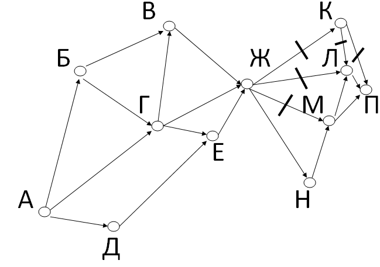

На рисунке — схема дорог, связывающих города А, Б, В, Г, Д, Е, Ж, К, Л, М, Н, П. По каждой дороге можно двигаться только в одном направлении, указанном стрелкой.
Сколько существует различных путей из города А в город П, проходящих через город Н?
Для решения 9 задания необходимо сразу же понять, стоит ли зачёркивать какие либо пути.
На этом примере это было необходимо, поэтому я сразу их зачеркнул.

Для того чтобы решить номер верно, нужно быть очень внимательным, так как нередко люди делают ошибки только из за того, что пропустили несколько возможных вариантов пути.
- На изображение показано решение данного номера.
- 1) Из города А в город Б только 1 путь (поэтому я и записал в скобках Б(1)) так же с путём из А в Д.
- 2) Дальше нужно просто складывать дороги от нужного города к последующему. Например чтобы записать сколько путей пройдёт через город Г, нужно сложить 1 путь из города А и 1 путь из города Б (так как только из этих городов ведут дороги к городу Г).
- 3) Например чтобы узнать сколько путей пройдут через город Ж нужно сложить 3 от города В, 2 от города Г и 3 от города Е. Аналогично нужно добраться к городу, указанному в условие(в данном случае к городу П).
- Ответ к этой задаче (16).